Ajahambast puretud. Selline nägi välja palvela välisaken enne
uuenduskuuri:
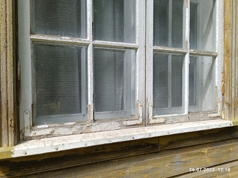
2023. a toimus palvelas vanade puitakende korrastamise lühikursus,
mida juhendas Tiiu Aavik. Kursuse käigus eemaldati aknalt vana värv ja
kitt ning asendati uuega. Vajadusel tuli ka asendata katkised akna
ruudud uutega. Kursusel osalejad omandasid hindamatud teadmised
meistri käe all.
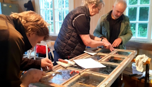
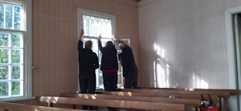
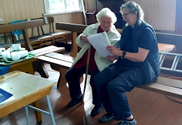
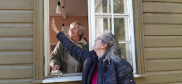
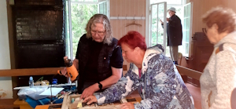
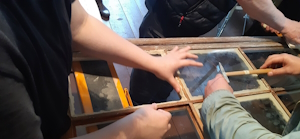
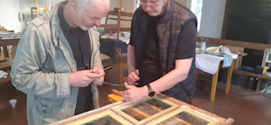
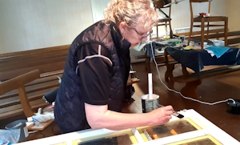
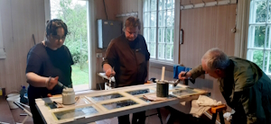
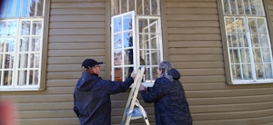
Siin mõned nähtavad tulemused, mida ühe vana aknaga teha võib: